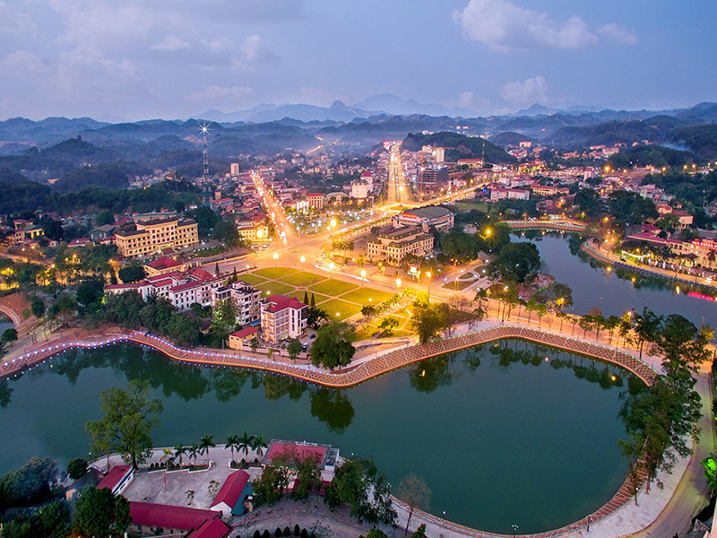

HELLO, IT'S NICE TO MEET YOU

Yên Bái, một tỉnh thuộc vùng Tây Bắc Việt Nam, nằm ở phía tây nam của vùng đồng bằng sông Hồng. Với địa hình đa dạng từ núi cao, thung lũng sâu đến hồ nước và thác nước,
Yên Bái là một trong những điểm đến độc đáo với cảnh đẹp tự nhiên hùng vĩ và sự phong phú văn hóa của các dân tộc thiểu số.
Thiên nhiên ở Yên Bái thường được mô tả như một bức tranh hùng vĩ, với dãy núi cao của dãy Hoàng
Liên Sơn ở phía bắc, kèm theo hồ nước như hồ Thác Bà và hồ Động Đạt, tạo nên một vùng đất đẹp mê hồn.
Thêm vào đó, Yên Bái còn nổi tiếng với những thác nước hoành tráng như thác Tây Yên Tử và thác Pác Bó.
Văn hóa của Yên Bái cũng rất đa dạng và phong phú do sự giao thoa của nhiều dân tộc, bao gồm dân tộc Kinh, Thái,
H'Mông, Dao, và Mông. Điều này tạo nên một bức tranh văn hóa độc đáo,
thể hiện qua lễ hội truyền thống, âm nhạc, múa dân gian và nghệ thuật điêu khắc trên đồ gốm, gỗ và đá.
Trong lòng vùng núi phía Tây Bắc Việt Nam, Yên Bái không chỉ là một điểm đến của cảnh đẹp thiên nhiên hùng vĩ mà
còn là một thiên đường của ẩm thực đặc trưng, đậm đà văn hóa của các dân tộc thiểu số.
Hãy cùng tôi khám phá về ẩm thực Yên Bái - một phần không thể thiếu trong hành trình khám phá vùng đất này.
Ở Yên Bái, mỗi món ăn đều là một tác phẩm nghệ thuật, được chế biến từ những nguyên liệu tự
nhiên phong phú và được truyền thống từ thế hệ này sang thế hệ khác. Một trong những món ăn nổi tiếng và đặc trưng nhất của Yên Bái là món
"cơm lam", nơi gạo được nấu trong ống tre, tạo ra hương vị đặc biệt và thơm ngon đặc trưng của miền núi. Đồng thời,
các món cháo từ gạo nếp nương cũng là một phần không thể thiếu trong bữa ăn hàng ngày của người dân nơi đây.
Ngoài ra, Yên Bái còn nổi tiếng với các món ăn chế biến từ thịt của động vật rừng như thịt lợn rừng,
thịt trâu và thịt dê. Các món ăn này không chỉ là sự kết hợp tinh tế giữa thịt và các loại
gia vị đặc trưng mà còn là biểu tượng của sự giàu có và sức mạnh trong văn hóa ẩm thực của Yên Bái......
Hãy để VN Foods giúp bạn hiểu hơn về văn hoá ẩm thực nơi đây nhé!